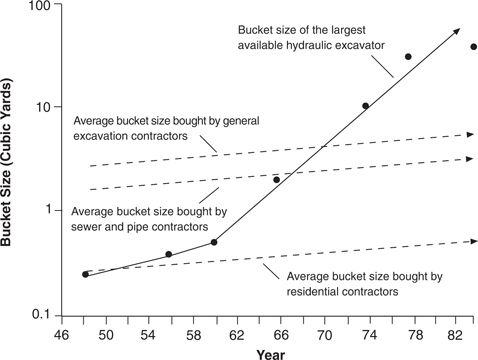
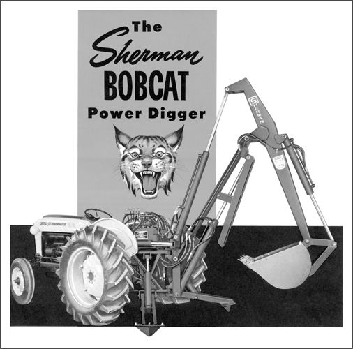

The first hydraulic excavator was developed by a British company, J. C. Bamford, in 1947. Similar products then emerged simultaneously in several American companies in the late 1940s, among them, the Henry Company, of Topeka, Kansas, and Sherman Products, Inc., of Royal Oak, Michigan. The approach was labeled “Hydraulically Operated Power Take-Off,” yielding an acronym that became the name of the third entrant to hydraulic excavating in the late 1940s, HOPTO. 9
Their machines were called backhoes because they were mounted on the back of industrial or farm tractors. Backhoes excavated by extending the shovel out, pushing it down into the earth, 10 curling or articulating the shovel under the slice of earth, and lifting it up out of the hole. Limited by the power and strength of available hydraulic pumps’ seals, the capacity of these early machines was a mere ¼ cubic yard, as graphed in Figure 3.3. Their reach was also limited to about six feet. Whereas the best cable excavators could rotate a full 360 degrees on their track base, the most flexible backhoes could rotate only 180 degrees.
Because their capacity was so small and their reach so short, hydraulic excavators were of no use to mining, general excavation, or sewer contractors, who were demanding machines with buckets that held 1 to 4 cubic yards. As a result, the entrant firms had to develop a new application for their products. They began to sell their excavators as attachments for the back of small industrial and farm tractors made by Ford, J. I. Case, John Deere, International Harvester, and Massey Ferguson. Small residential contractors purchased these units to dig narrow ditches from water and sewer lines in the street to the foundations of houses under construction. These very small jobs had never warranted the expense or time required to bring in a big, imprecise, cable-actuated, track-driven shovel, so the trenches had always been dug by hand. Hydraulic backhoes attached to highly mobile tractors could do these jobs in less than an hour per house, and they became extremely popular with contractors building large tract subdivisions during the housing booms that followed World War II and the Korean War. These early backhoes were sold through tractor and implement dealerships accustomed to dealing with small customers.
Figure 3.3 Disruptive Impact of Hydraulics Technology in the Mechanical Excavator Market

Source: Data are from the Historical Construction Equipment Association.
The early users of hydraulic excavators were, in a word, very different from the mainstream customers of the cable shovel manufacturers—in size, in needs, and in the distribution channels through which they bought. They constituted a new value network for mechanical excavation. Interestingly, just as the performance of smaller-architecture disk drives was measured in different metrics than the performance of large drives (weight, ruggedness, and power consumption versus capacity and speed), the performance of the first backhoes was measured differently from the performance of cable-actuated equipment. The metrics featured most prominently in early product literature of hydraulic backhoes were shovel width (contractors wanted to dig narrow, shallow trenches) and the speed and maneuverability of the tractor. Figure 3.4, excerpted from an early product brochure from Sherman Products for its “Bobcat” hydraulic back-hoe, illustrates this. Sherman called its Bobcat a “digger,” showed it operating in tight quarters, and claimed it could travel over sod with minimum damage. The Bobcat was mounted on a Ford tractor. (Ford subsequently acquired the Sherman Bobcat line.) The featured attributes, of course, were simply irrelevant to contractors whose bread was buttered by big earthmoving projects. These differences in the rank-ordering of performance attributes defined the boundaries of the industry’s value networks.
Figure 3.4 Hydraulic Backhoe Manufactured by Sherman Products

Source: Brochure from Sherman Products, Inc., Royal Oak, Michigan, early 1950s.
The solid line in Figure 3.3 charts the rate of improvement in bucket size that hydraulics engineers were able to provide in the new excavator architecture. The maximum available bucket size had reached 38 cubic yard by 1955, 12 cubic yard by 1960, and 2 cubic yards by 1965. By 1974, the largest hydraulic excavators had the muscle to lift 10 cubic yards. This trajectory of improvement, which was far more rapid than the rate of improvement demanded in any of the excavator markets, carried this disruptive hydraulics technology upward from its original market through the large, mainstream excavation markets. The use of hydraulic excavators in general contracting markets was given a boost in 1954 when another entrant firm in Germany, Demag, introduced a track-mounted model that could rotate on its base a full 360 degrees.